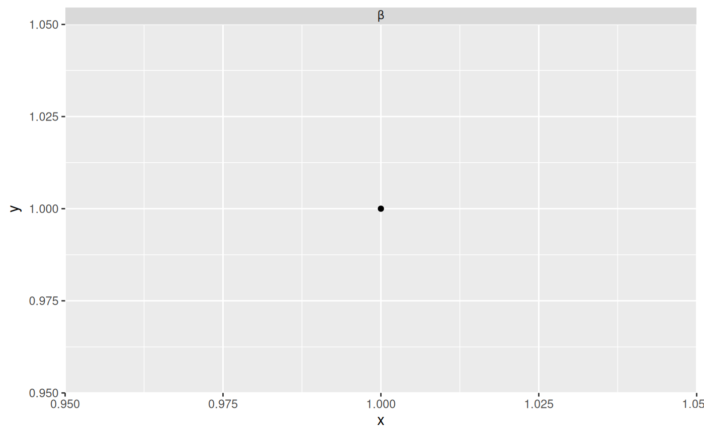

This function formats the strip labels of facet grids and wraps that contains TeX expressions. The latex2exp package must be installed.
Arguments
- labels
Data frame of labels. Usually contains only one element, but faceting over multiple factors entails multiple label variables.
- ...
Arguments passed on to
ggplot2::label_parsedmulti_lineWhether to display the labels of multiple factors on separate lines.
Examples
# requires latex2exp package be installed
if (requireNamespace("latex2exp", quietly = TRUE)) {
library(ggplot2)
d <- data.frame(x = 1, y = 1, facet = "$\\beta$")
ggplot(d, aes(x, y)) +
geom_point() +
facet_wrap(~ facet, labeller = label_tex)
}
